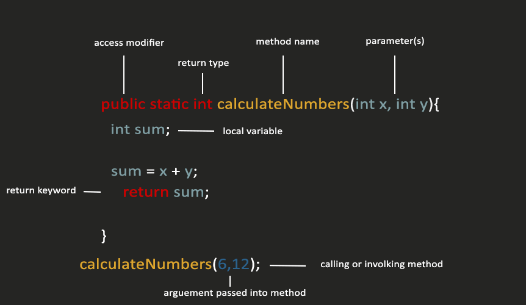
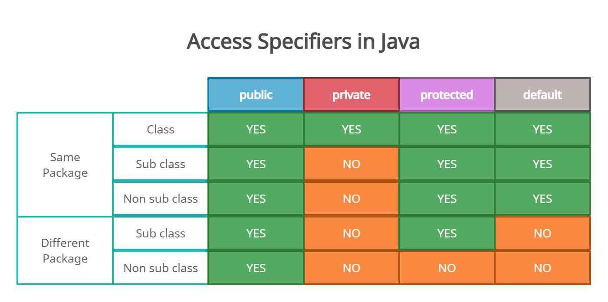
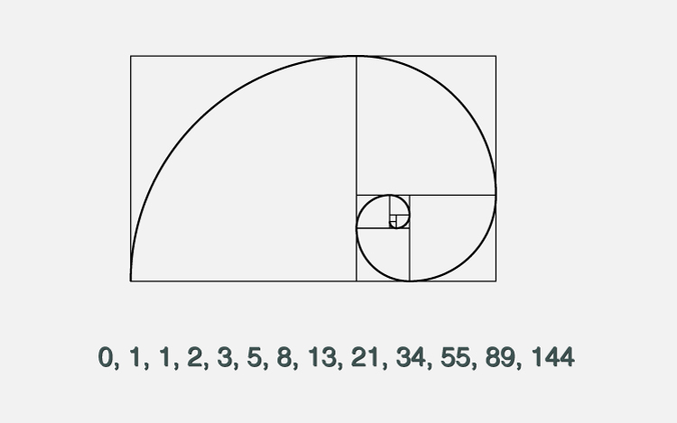

Modularization
Instructor: Chris Fulton
Learning Objectives
- Explore the structure of a method definition, including parameters, visibility and return values
- Method Anatomy
- Method Keywords
- Calling/Invoking Methods
- local and global variables
- Parameters and arguments
- Arguments and Parameters
- Describe the effect of the static modifier on methods and data.
- Discuss issues related to the design of methods, including method decomposition and method overloading.
- Practice with predefined Methods from the Java Standard Library
- Understanding how recursion works
Methods
Understanding Methods
- Methods
- An encapsulated series of statements that perform a task
- Using a method is called invoking or calling the method
- Two Step Process - Every Method should be defined then called/invoked
- Implementation Hiding
- keeps the details of a methods operations hidden.
- the only concern is the way you interface, or interact with the method
- methods exist in a black box - a virtual device you can use without knowing how it works internally.
Why Modularize a program
Why Methods?
Easier to Debug and Test
Each discrete task has its own discrete section of code if a program is designed with modularity in mind
If there is a problem in a particular method, the programmer knows where to look and can manage a smaller portion of code.
Reusable Code
Modular code allows programmers to easily reuse code. If particular tasks are sectioned off to certain functions or classes, this means that the programmer can reuse that particular code whenever she needs to perform that task again.
Readability and Reliability
Modular code is code that is highly organized. To organize code based on task means that the programmer can organize each piece of code based on what it does.
Code that is easier to read, easier to debug, easier to maintain and easier to share will always run smoother with less errors.
Method Anatomy
Why methods?
Methods contains a series of statements that carry out a task
You can Invoke or call a method from another program or method
A program can contain an unlimited number of methods
A method can be called an unlimited number of times
Methods provide structure for testing and maintainability
Method Breakdown
Access Modifiers
Methods without Parameters
No Parameters
When you call a method from a program, you must know three things:
1) Name of the called method
2) Type of info. to sent to the method,if any
3) Type of return data to expect from method, if any
No parameters defined or argments passed into method when called.
displayInstructions()
Methods with Parameters
With Parameters
When you call a method from a program, you must know three things:
1) Name of the called method
2) Type of info. to sent to the method,if any
3) Type of return data to expect from method, if any
Arguement to the method - pass a data item into a method from a calling program
Parameter to the method - method receives the data item
computeTax(202.01, .10) //Called
computeTax(double amount, double rate) //Defined
Learning Activity

Step 1
Using the above image - define a global array within the main method that holds each of the items above.
Step 2
Create a method that outputs each of the items within the diagram
Step 3
Create a method that ask the end user to input a item that needs to be picked up at the grocery store.
Static vs. Non-static methods
- Static
- lets a method run without any instance of the class. A static method belongs to the class, so there’s no need to create an instance of the class to access it.
- belongs to the class, so there’s no need to create an instance of the class to access it. A static method is called using the class (className.methodName) as opposed to to an instance reference (new instanceOfClass = class; instanceOfClass.methodName.)
- Non-Static
- A non-static method belongs to an object of the class and you have to create an instance of the class to access it.
- Non-static methods can access any static method and any static variable without creating an instance of the class.
Overloading Methods
Overloaded Methods

Overloading
Involves supplying diverse meanings for a single identifier
Overload a Method
Write multiple methods with a shared name but different parameter lists
Language translator understands which version of the method to use based on the arguments used
Polymorphism
Ability of a method to act appropriately according to the context
Literally, polymorphism means “many forms”
Overloading Method Benefits
Memorability - Advantage is provided to your method’s clients
d receives the data item
Those who use your methods need to remember just one appropriate name for all related tasks
Advanced Method Concepts
Fibonacci sequence in the World
The Fibonacci sequence is one of the most famous formulas in mathematics. It is significant because of the so-called golden ratio of 1.618, or its inverse 0.618.
Fibonacci sequence Formula and Output
The Fibonacci sequence is one of the most famous formulas in mathematics. It is significant because of the so-called golden ratio of 1.618, or its inverse 0.618.
Learning Activity
Step 1
Look up the formula for the fibonacci sequence and do research on this mathematical phenomenon
Step 2
Think through and apply the correct structures to fulfill the requirements of the sequence using recursion.
Step 3
Code the program in Java
References
- https://beginnersbook.com/2018/10/data-structure-introduction/
- https://beginnersbook.com/2018/10/data-structure-array/